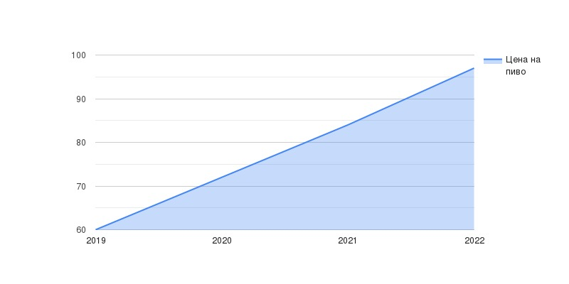

ЧЕМ МЫ НЕ МОЖЕМ ПОХВАСТАТЬСЯ
График роста цен на пиво

Наши экономисты провели тщательный анализ рынка пивных напитков начиная с 2019 года по 2022. В ходе сложных математических подсчетов было выявлено - цена на пиво растет с каждым годом. Наша команда была в шоке от полученных результатов, хотелось плакать и скупать все пиво с полок, пока оно не подорожало еще больше. "Пей пиво сейчас - потом будет дороже" - именно после этих слов Виктора Цеслюкевича (любитель Hooch), мы пошли в магазин и скупили более 40 банок различного пива. Также хочется заметить, что пиво - отличное вложение капитала. В среднем цена на пиво растет на 12-13% в год, что является отличным показателем, в сравнении с инвестициями в недвижимость или авто. Наша рекомендация касательно пива - ПОКУПАТЬ.
Команда Zapiv.com